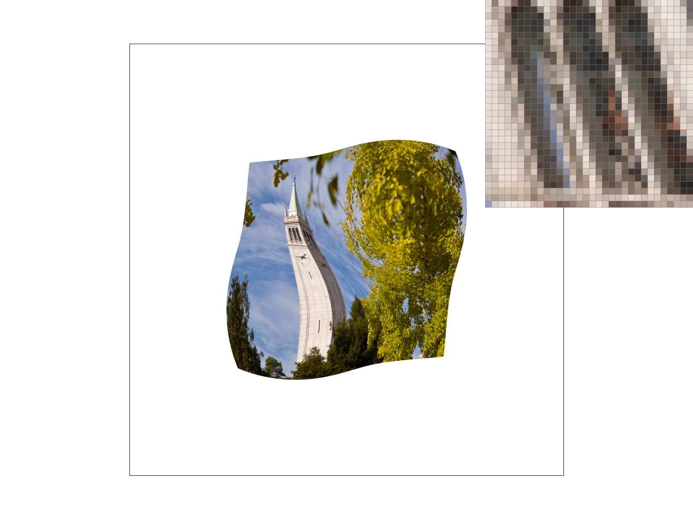

Overview
Through this project, I learned a lot more about the process behind 2D digital graphics and some of the engineering benefits and costs that come with creating a digital drawing. As a 3D artist, I was able to gain more insight on the logic behind the processes I use everyday like UV mapping.
Section I: Rasterization
Part 1: Rasterizing single-color triangles
For each triangle line, I checked if the center of every pixel was within the bounds of the triangle or not. If all 3 calls returned the same sign, all positive, all negative, or all zero, then that meant the current pixel was within the bounds of the triangle so it fills the pixel with its corresponding color.
The algorithm I implemented does no worse than one that checks each sample within the bounding box of the triangle since it similarly checks each sample within the bounding box. Each point-in-triangle test is performed for every pixel point.
Part 2: Antialiasing triangles
I iterated through the sample buffer with an additional for loop that breaks the pixels down into smaller sections. I then offset each coordinate by (1 / sqrt(sample_rate) * 2) to calculate the center of the supersample. I then undergo the same line tests from part 1 to check if each supersample is within the triangle or not.
After finding the color value of each supersample, I take the average of the supersamples per pixel in order to resolve the sample buffer to the frame buffer, which is what will be rendered ultimately. I used a function to iterate through the sample buffer and add up all the r, g, and b color components of each supersample within a pixel. Then, I divided those by the sampling rate to get the average color of the pixel. This is what creates a blurred effect in the final render.
Supersampling is useful because it allows us to soften the appearance of jaggies, which are artifacts caused by sampling and high frequency changes between pixels. It is an anti-aliasing method that reduces the high frequency changes through a blurring effect acheived through color gradation.

|
|
|
|
|
Part 3: Transforms

|
|
To accomplish this, I first used the rotate transform to rotate the upper arms in the correct orientation. I then used the upper arm positions to rotate and translate the lower arms in relation. I translated the waving arm up and to the right and translated the other arm down and to the left. Lastly I scaled the top cube up a bit and rotated it to give a friendly head tilt. I also changed the color for fun!
Section II: Sampling
Part 4: Barycentric coordinates
To calculate them, I first found the coefficients: alpha, beta, and gamma. These are used to weigh specific points so that the final barycentric coordinates (x,y) = alpha * A + beta * B + gamma * C, with A, B, C referring to each point on the triangle.

Part 5: "Pixel sampling" for texture mapping
I used two methods of pixel sampling: nearest and bilinear. FOr nearest pixel sampling, the sample pixel is compared to the point closest to it and that same color is applied to the sample. When sampling a texture the exact center of the pixel will most likely not be sampled. To account for this, bilinear sampling uses linear interpolation on the four nearest values of the texture pixels near the sample location.
|
|
|

|

|
Part 6: "Level sampling" with mipmaps for texture mapping
The cost of mipmapping is that is uses more storage because we need to keep track of the down-sampled texture. The benefit is that the amount of storage required can be reduced by increasing the mipmapping level. Compared to supersampling, which takes a lot of time and computation, mipmapping can decrease the render time while still producing anti-aliasing effects. Bilinear sampling is much faster and still averages out the information well through interpolation.

|

|

|

|